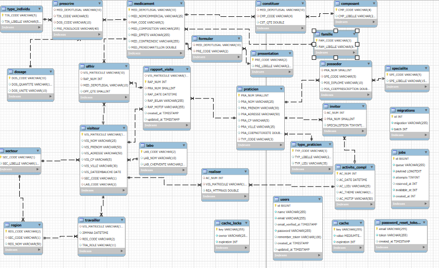

Ce projet a été réalisé dans le cadre du BTS SIO, pour répondre aux besoins du laboratoire Galaxy Swiss Bourdin (GSB), issu de la fusion de plusieurs laboratoires pharmaceutiques. L’objectif était de concevoir une application web permettant aux visiteurs médicaux de centraliser et consulter les rapports de leurs visites, ainsi que les informations sur les praticiens et les médicaments.
L’application GSB a pour but de faciliter le travail des visiteurs médicaux. Elle permet de :
Grâce à cette centralisation, le suivi des visites est plus clair, plus structuré, et permet au laboratoire d’avoir un retour sur les échanges entre les visiteurs et les professionnels de santé.
L'application repose sur une architecture MVC. Voici comment elle a été structurée :
Models : Chaque entité (Visiteur, Rapport, Praticien, Médicament) possède un modèle Eloquent relié à la base de données.Controllers : Ils gèrent les actions métiers : affichage, ajout, modification, suppression des données.Views : Les vues Blade affichent dynamiquement les données récupérées.php artisan migrate et php artisan make: pour la création de migrations et composants.Dans le cadre de ce projet, plusieurs ressources numériques ont été développées ou mises en œuvre pour répondre aux besoins des utilisateurs finaux :
Ces ressources numériques contribuent à la digitalisation des processus métier et améliorent considérablement la gestion des informations au sein du laboratoire GSB.
Voici le diagramme de classes utilisé pour modéliser les entités et leurs relations dans le projet :
Diagramme UML présentant l'ensemble de la structure base de données du projet
Chaque table représente une entité spécifique de l'application. Voici un résumé des principales :